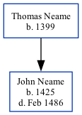

John Neame 1425 - 1486
[ Home ] | [ Calendar ] | [ Surnames Index ] | [ Family History ]The child of Thomas Neame, John Neame, the sixteen times great-uncle of <a href="I1.html">Nigel Horne</a>, was born in Kent, England in 1425.<p>He died in Feb 1486 in Ash, Kent<span class="citation">1</span>.
Parents
- Thomas was born in 1399
Citations
- UK, Extracted Probate Records Online publication - Provo, UT, USA: Ancestry.com Operations Inc, 2009.Original data - Electronic databases created from various publications of probate records.Original data: Electronic databases created from various publications of probate records.
Family Tree
Generated by Ged2Site. Last updated on Jul 20, 2025